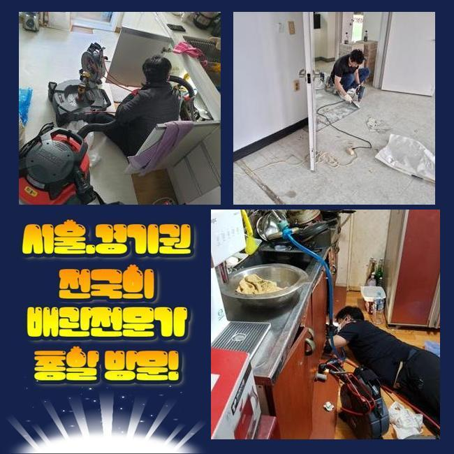
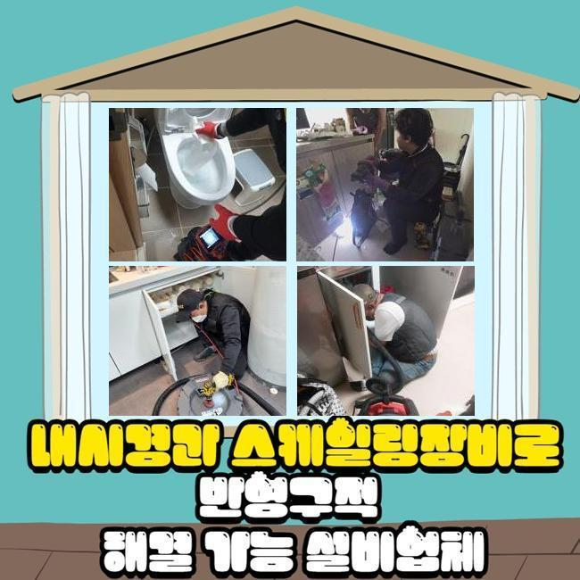
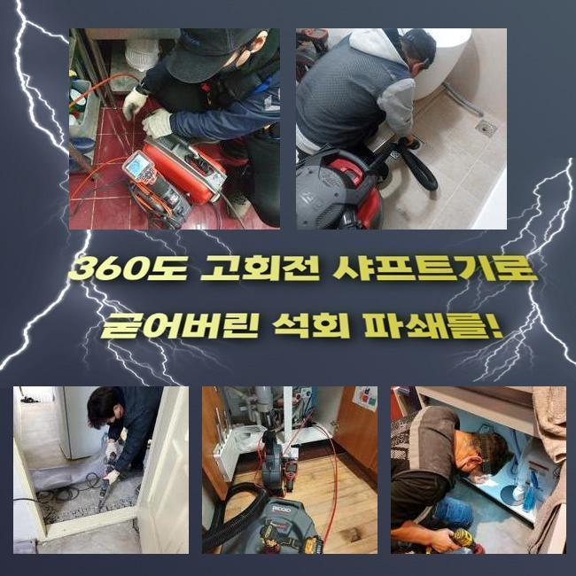
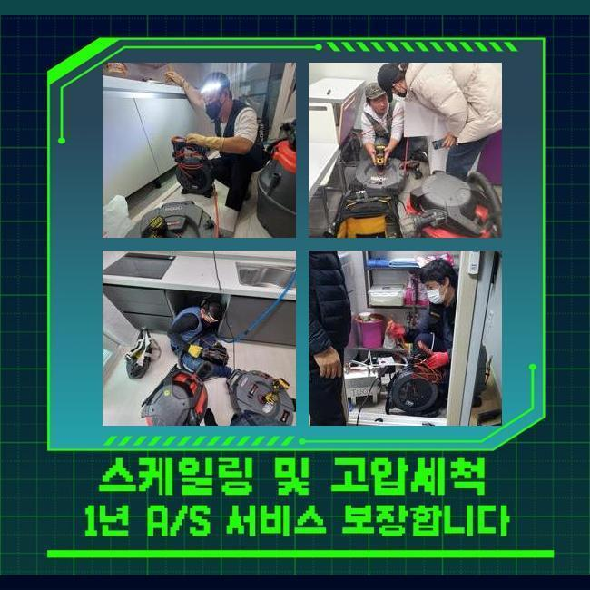
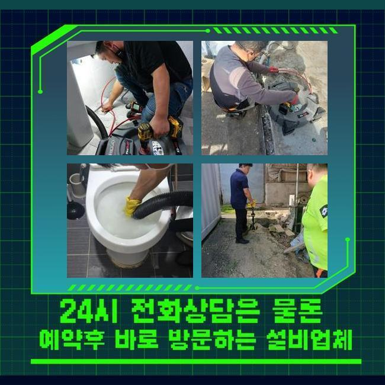
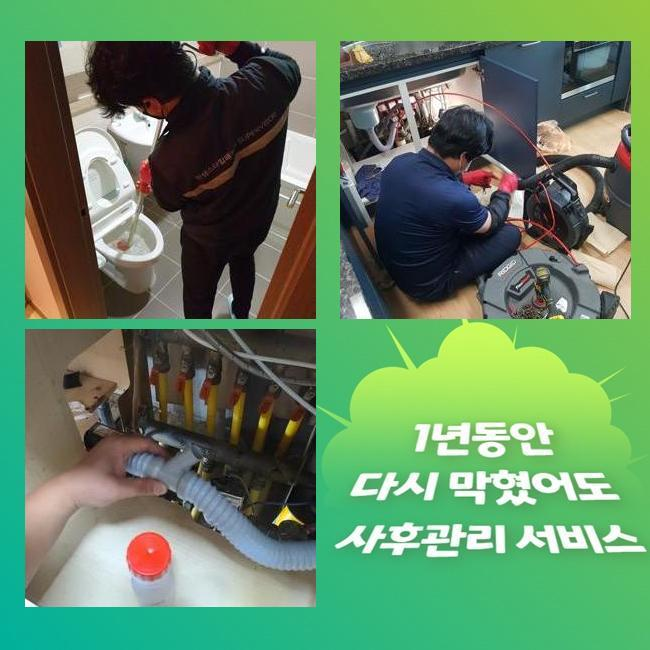
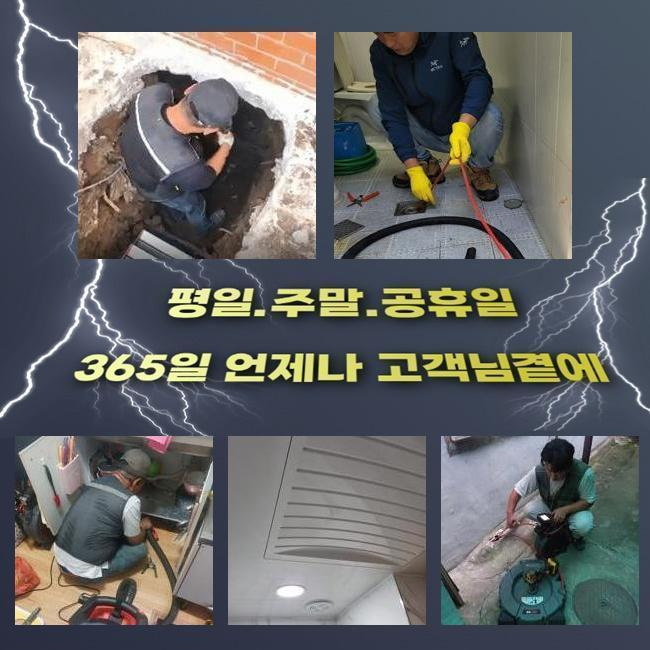

🏠 오성면변기막힘 용이동 배수구뚫기 누수탐지공사
용인 변기막힘 전문 시공 후기

📋 작업 개요
- 위치: 용인
- 서비스 유형: 변기막힘, 하수구막힘, 배관막힘, 누수수리, 역류해결, 뚫는업체, 배관청소, 고압세척, 설비공사
- 작업 일시: 2025. 1. 20. 19:42
- 업체명: 하수구수사대 (010-5615-2118)
🔍 문제 상황
오성면변기막힘 용이동 배수구뚫기 누수탐지공사
저희의경우 며칠전 상업시설의 통수장애를 시정해내고자 찾아뵙게되었어요
상가관리를 도맡았던 의뢰자의 설명을 듣고 저희전문진은 상가내의 화장실쪽에서 만성적인 이물질 역류 배수정체를 시정해내고자 해당 장소에 도달했어요
고객의 경우 이것때문에 이용자로부터 불평을 들으셔야했는데요
이 모든 상황들을 신속하게 조치해줘야했기에 저희전문진은 도착한 후 관로를 진단했습니다
꾸준히 야기되는 오염물들이 하수도를 좁힌것을 관찰한 후 조속하게 작업해드렸는데요
이전의 현장들로 추측하니 해당 고형물은 상당수 메인관에서 관찰되기에 이런 문제들이 생기게 된걸로 예상했어요
그렇기에 조속히 외부라인으로 이동해서 문제들을 야기시키는 배수관의 스팟을 파악하고자 검수를 시작했는데요
탐지장치를 사용해서 배관의 지점을 특정시켰고 안을 살피니 오염된 정도가 만만치 않았어요
수전쪽에 쌓이게된 부유물들의 잔여물질과 외측에서 흘러들어간 폐기물들까지 섞여있던 상태였어요

🔎 원인 분석
💡 전문가 진단: 정밀 진단 장비를 사용하여 슬러지의 고착 여부를 판명하고 타격/세척 작업을 실시했습니다.
이러한 통수오류를 해결할 목적으로 빠르게 적합한 대응책을 펼쳤고 상업시설의 시설을 장기적으로도 사용하게 했죠
일정 구간들에 잔해가 누적될 시 많은 막힘들을 생기게하기에 골든타임을 사수하는게 요구됩니다
검수해봤더니 잔해가 넓은 범위에 분포해있는것을 체크하게되었어요
폐기물들은 지금까지 축적되면서 돌덩이처럼 크기를 키워가고있었습니다
고착화가 진행되면서부터 배수에 치명상이 나타났다고 생각하게되었습니다
그렇기에, 장비들을 통해 관로를 청결하게 만들기로 했습니다
장비들을 통해 배수관을 시공한다면 고압노즐분사가 요구됩니다
만약에 집수시설에 잔해물이 자리하고 있으면 평상시의 해결책으로는 개선을 꿈꾸기엔 힘든데요
그러므로, 고압노즐을 사용해 효율적으로 고착물들을 제거시키는게 이행되어야해요
구간별 청소를 실시해주면 배수관을 깔끔히 사용할 수 있고 오류가 쌓이는 것을 미리 예방하게 됩니다
그리하여, 배수구를 시공한다면 고압노즐분사를 고려하시는것도 권장드립니다

🔧 작업 과정
같은 맥락으로 잔해가 축적되지 못하게 때때로 점검하는게 대두되고 알맞게 조치해주면 골머리 앓는 일 없이 배수정체를 해결할 수 있습니다
그리하여 오류가 발생했을 때는 괄목할만한 시공이 대두되고 전문진의 도움으로 속 시원한 배수 과정들을 유지해주시는 것이 실시되야했습니다
기술적인 측면이 먼저겠지만 전문인과 함께하여 배관을 깔끔히 만들어주는게 실용적인 방식으로 작용할 수 있어요
일련의 과정들을 빈틈없이 이행하려면 구조적인 부분과 특수성을 살펴야하겠습니다
하수도의 경우 여러개의 소재로 구성되어있고 기간이 지나면서 내식성이 저하되므로 과한 힘을 쏘는것은 위험할 수 있습니다
내구성과 해당 장소의 데이터를 바탕으로 올바른 방식들을 써야하죠
이런 요소들을 지켜준다면 고압세척들로 완성도 높은 결과물을 경험할 수 있죠
이용했던 석션장치는 압차를 밀어넣어 하수관의 잔재들을 안정적으로 청소했는데요
석션기에 배출된 오염물의 잔해를 확인하였고 내시경기기를 이용해 심층부까지 확인하니 고착물이 상당해 배관공간을 협소하게 했죠
이를 확인하고 타 방법을 실시해 저희전문진은 관로에서 발생한 통수장애를 신속하며 효율적으로 해결해주고 구조상태와 이물의 양상을 파악해보고 청소하여 수월한 배수상황을 유지시켰죠
이런 현상은 보통 잔해물이 내측에 누적되어있어 축적되는 문제들로 내측으로부터 좁혀지게되어 유수흐름들이 불가한 현상들이 우리 앞에 다가옵니다
이러한 상태라면 전문인들의 도움으로 내시경기기를 준비해 심층부까지 검수해보고 확실한 기조요소들을 배출시키는게 실시되야했습니다
이러한 작업들을 진행시키면서 저희업체는 타겟이되는 부위로 케이블들을 삽입해주었고 초입의 라인에선 기름들이 일시에 제거되는것을 보게되었어요
이와 달리 기름슬러지가 자리잡은 3미터 포인트에선 기름고착의 형상을 체크해보면서 분사의 강도들을 조절해 청소들을 진행시켰죠
슬러지들의 고착이 심각하여 온수 고수압세척들을 진행했는데 안정성을 목표로하는 수칙을 상기하고 기름슬러지를 처리했죠
막히게되는 사태는 예고없이 야기되어 다양한 고충을 야기시키죠
배수관의 결함들은 8할 이상이 아직 이물들이 점차 쌓여 발발하므로 조속히 배수정체를 정정해주어야 하겠습니다


✅ 작업 완료
고객의 고민을 덜어드리기위해 빠르게 시정해드리도록 할게요
통수오류를 조사하고 올바른 방법들을 선정해 작업에 집중합니다
신속한 대응들이 중요하므로 장기간 내버려두는 일은 없어야해요
해결책들이 필요하실 때에는 편하게 연락주세요!
트러블들이 발생하면 조속히 대응하여 안전성을 갖추고 청결한 배수환경들을 지키겠습니다




⚠️ 베란다 누수 및 방수 관리 방법
- ✅ 비가 많이 올 때 창틀 주변이나 아래층 천장에 얼룩이 생기는지 정기적으로 확인해 보세요.
- ✅ 우수관 주변 실리콘 마감이 들뜨거나 깨진 틈새가 있는지 손상 여부를 수시로 체크하세요.
- ✅ 베란다 바닥 타일의 줄눈(메지)이 소실되면 그 틈으로 물이 침투하여 누수가 유발됩니다.
- ✅ 누수 의심 증상 발견 시 방치하면 아래층 손실이 커지므로 즉시 전문가의 진단을 받으십시오.
💡 핵심 정리
- 확실한 장비 작업(내시경 점검 및 샤프트 스케일링)으로 원인을 뿌리 뽑습니다.
- 작업 후 1년 이내에 동일한 부위 재발 시 100% 무상 A/S 서비스를 보장합니다.
- 서울 · 경기 · 인천 전 지역에 24시간 언제든 긴급 출동할 수 있도록 항시 대기 중입니다.
❓ 자주 묻는 질문 (FAQ)
🚨 용인 변기막힘 문제로 고민이신가요?
정확한 원인 진단과 확실한 시공으로 재발 없는 해결을 약속드립니다.
24시간 긴급 출동 | 서울 · 경기 · 인천 전지역 | 1년 내 재발 시 무상 A/S